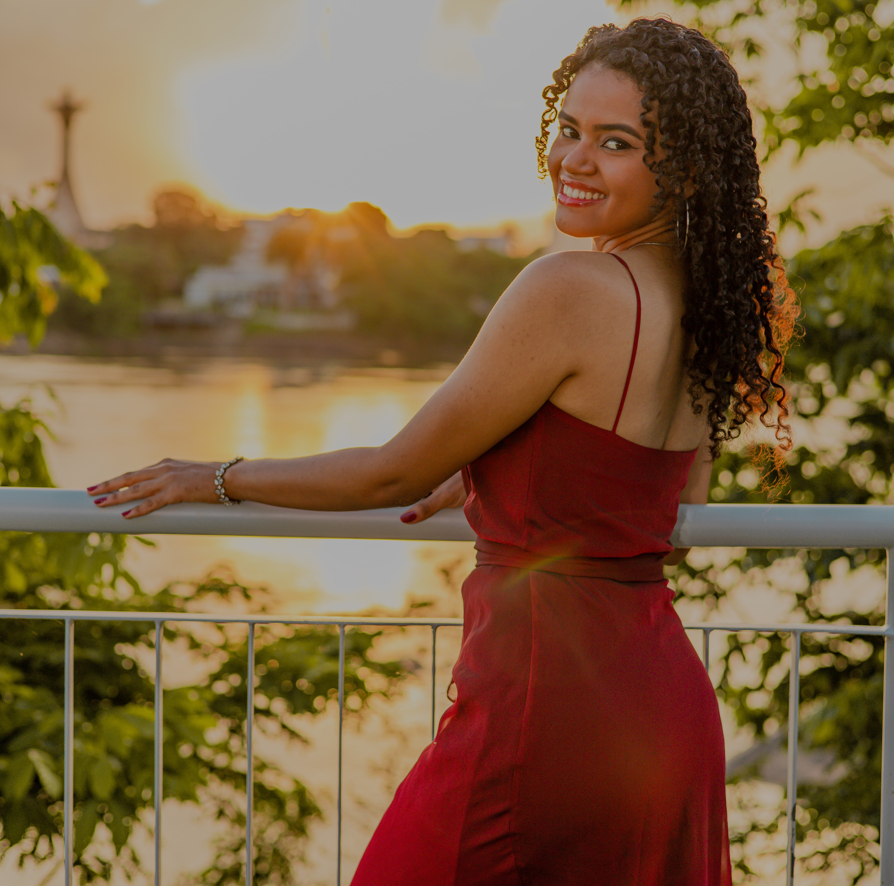

O propósito deste site é servir como um portal dedicado à fotografia, criado com a intenção de compartilhar e celebrar a arte visual por meio de imagens cativantes e inspiradoras.
Quem Somos nós?
Conheça Hilary Souza de Oliveira

Sou um apaixonado por fotografia que acredita no poder de congelar momentos no tempo e transformá-los em arte. Desde que peguei minha primeira câmera, minha missão tem sido capturar a beleza efêmera que muitas vezes passa despercebida no dia a dia.
Com anos de experiência e inúmeras aventuras fotográficas, desenvolvi um olhar único e uma habilidade para contar histórias por meio das minhas imagens. Cada clique é uma oportunidade de eternizar uma emoção, um cenário deslumbrante ou um momento especial.
Este site é meu espaço para compartilhar minha paixão pela fotografia com o mundo. Nele, você encontrará uma coleção de fotos que capturam minha visão artística, assim como informações sobre meu trabalho e os serviços que ofereço.
Se você também é um amante da fotografia ou está interessado em colaborar em um projeto fotográfico, sinta-se à vontade para entrar em contato comigo. Estou sempre em busca de novas oportunidades e desafios emocionantes.
Obrigado por visitar meu site e por compartilhar essa jornada visual comigo. Espero que minhas imagens inspirem e emocionem você tanto quanto me emocionaram ao capturá-las.
Conheça Diego Viana da Silva

Minha jornada na fotografia começou como um simples hobby, mas ao longo dos anos, transformou-se em uma paixão incontrolável. Através da lente da minha câmera, busco capturar a magia que existe no mundo ao nosso redor.
Cada fotografia que tiro é uma oportunidade de contar uma história única, de transmitir emoções e de congelar momentos fugazes. A beleza da fotografia está em sua capacidade de eternizar instantes que jamais serão repetidos.
Este site é meu refúgio criativo, onde compartilho minha visão única do mundo. Aqui, você encontrará uma coleção de imagens que refletem meu estilo artístico e minha dedicação à fotografia. Além disso, você poderá obter mais informações sobre meu trabalho e como podemos colaborar juntos.
Se você também é um entusiasta da fotografia ou está interessado em discutir projetos fotográficos emocionantes, não hesite em entrar em contato comigo. Adoro conhecer pessoas que compartilham minha paixão e estou sempre aberto a novas oportunidades de colaboração.
Obrigado por explorar meu site e por permitir que minhas imagens o levem a uma viagem visual única. Espero que você se inspire e se emocione tanto quanto eu ao criar essas fotografias.